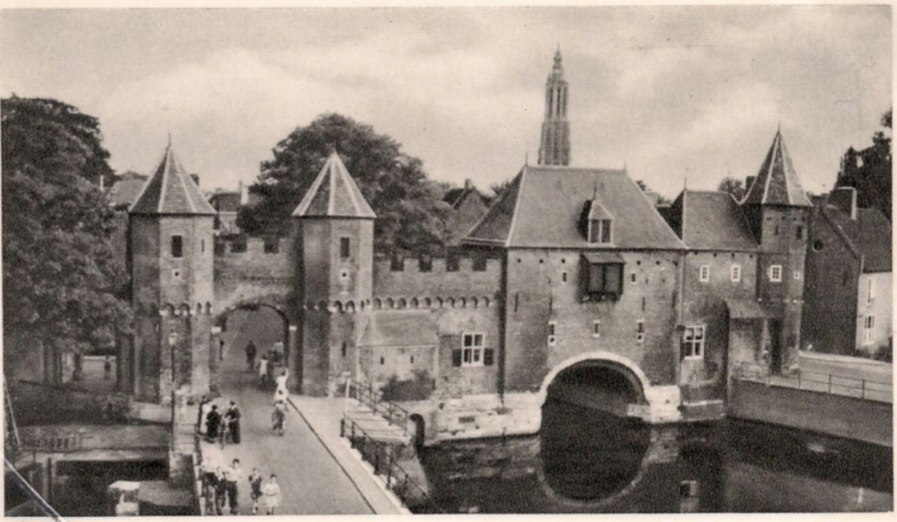

Voor groepen en bedrijven
Tijdspoort voor groepen en bedrijven
Groepen kunnen samen een filmisch historisch verhaal ervaren, met de historische binnenstad van Amersfoort als decor. De ervaring is bedoeld als gezamenlijke, verrassende en toegankelijke kennismaking met de geschiedenis.
Wat beschermt ons nu?

Een gezamenlijke tijdreis
De ervaring brengt mensen samen rond een historisch verhaal over keuzes, samenwerking, vertrouwen en veiligheid.
Een verhaal dat samen wordt beleefd
Bezoekers lopen door vier locaties en beleven één doorlopende tijdreis, die als aanleiding kan dienen voor gesprek en reflectie.
Lokale geschiedenis op een toegankelijke manier
De beleving laat de stad en haar verhalen zien via een verrassende, herkenbare en filmische vorm.
Toekomstige combinatie met de stad
Voor groepen onderzoeken we mogelijkheden om de tijdreis in de toekomst te combineren met lokale horeca, vergaderlocaties en andere activiteiten in de stad.
Ontwikkelrichting
Niet als vast product, maar als groeimogelijkheid
De mogelijkheden voor groepen zijn nog in ontwikkeling. We presenteren daarom geen definitieve arrangementen, prijzen, groepsgroottes of vaste tijden.
Bestaande vormen van bezoek, samenwerking en lokale koppelingen worden in de komende fase verder onderzocht en gelieerd aan de inhoud van de beleving.
Als je wilt, kunnen we later een concrete, boekbare groepsvorm uitwerken zodra die definitief beschikbaar is.